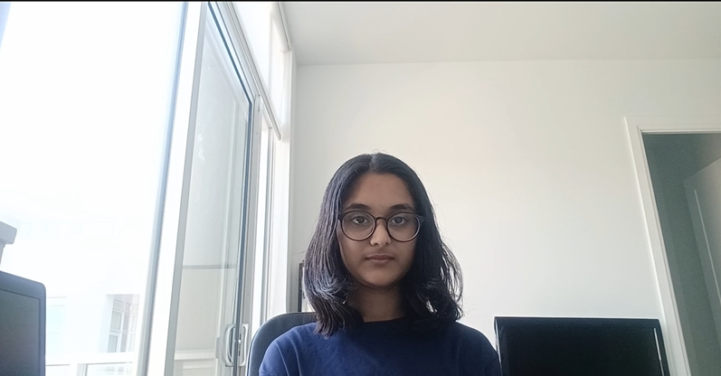

Who I Am

Hello! My name is Jovitha, and I am a student at Ontario Tech University studying Networking and Information Technology Security. I am interested in computer networks, cybersecurity, and learning how technology can be used to solve problems.